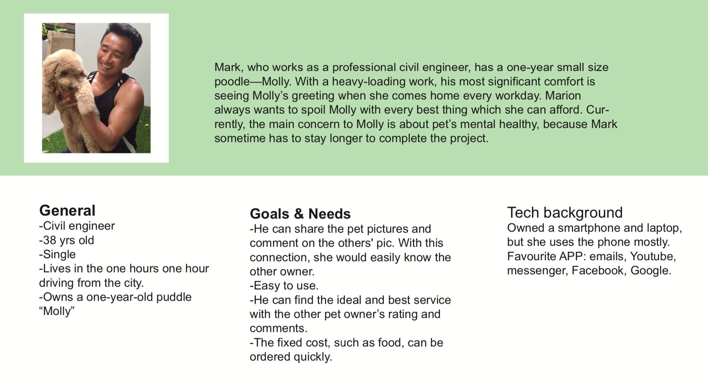
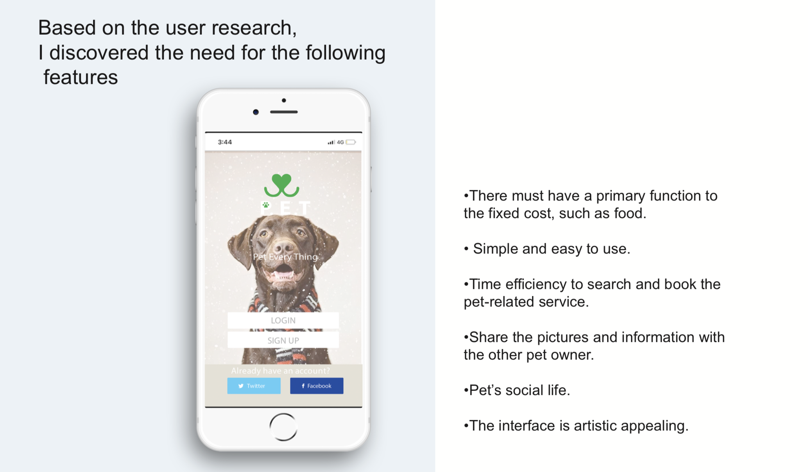
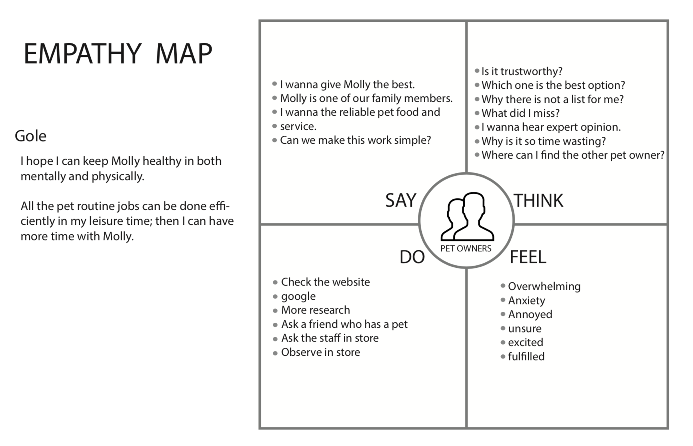
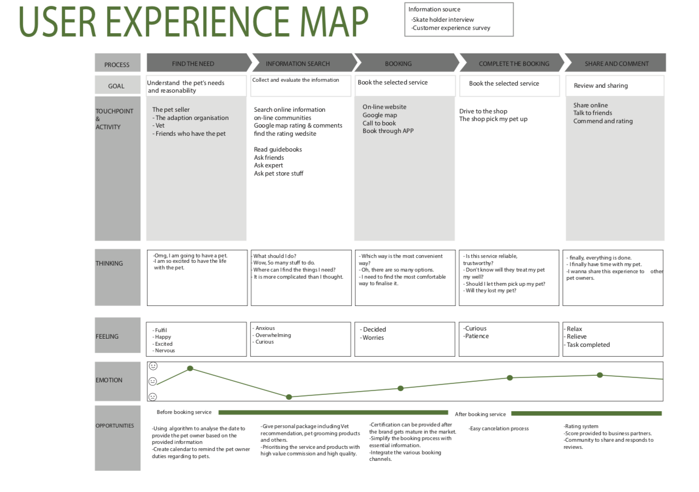
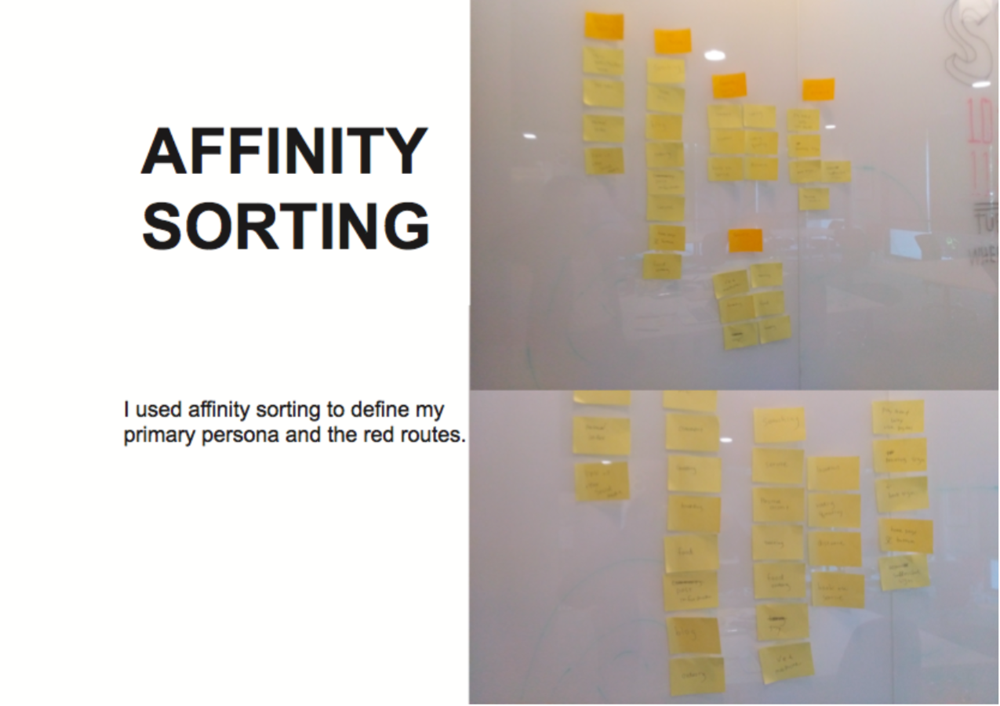
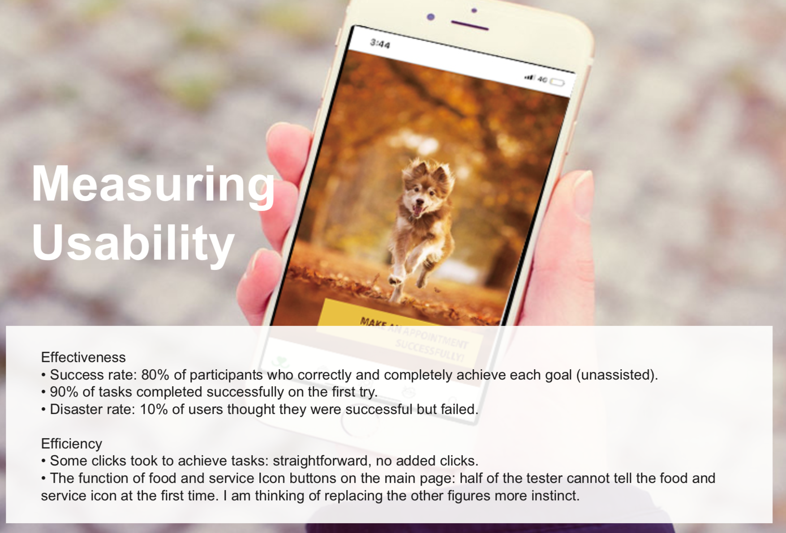
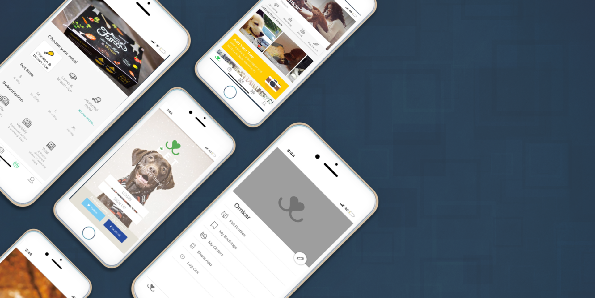

PET
PROJECT SUMMARY
April/2018 - May/2018
PET (Pet EveryThing) is an app platform which provides comprehensive pet related guideline and service. The combination of pet retailer and social community for pet owner make this app different with other pure pet retailer app. My role was to research, design and test the product. I worked with my team whose background are Marketing, Advertising and management in Product Innovation.
Design Tools / UX Methods
Used Competitive Analysis, Affinity sorting, Personas, Storyboarding, Paper prototypes, Sketch, Adobe Photoshop for retouch and mockups.
Major Tasks & Responsibilities:
Carry out user research to discover if there is a user need for a product like this. Identify the key user groups, identify the critical tasks, set usability goals, develop a prototype and run a usability test before iterating on the design.
The Problem
Nowadays, more and more people choose to have a pet as a companion in this fast-paced and isolated society. The time with a pet is sweet, however, dealing with all the pet-related work is an important responsibility to us. How to choose a reliable pet service, from pet food, grooming, to the vet are the problems bothering every pet owner. Also, how to find the other pet friends for our furry friend and search pet information is another time-con- suming problem as well.
The Solution
This app aims to ease the pet owners' burden to search the pet service and make all the order process more accessible. Also, the photo-focused social community function provides pet owners connect and share the useful and first-hand information.
Tools
Sketch (Wireframes and Visual design), Pen and Paper (paper prototyping and storyboarding).
USER RESEARCH
I interviewed five pet owners aged range 30-54 to evaluate the need for the system. It showed the following:
- 60% are living in suburbs
- 80% have experience of sharing pet pictures on social media.
- Two users even create their pet particular social media accounts.
- 100% used to search the pet service online.
- 80% users would love to let their pet socialise with other pets.
Personas
According to the research, the pet owner aged 25 to 44 occupied the half in Australia.( (Arna Richardson,2018) Thus the target groups which the following features stood out: The professional worker who has relatively high income,Tech-savvy into quirky apps & functions. People who care about the pet’s health and social life.My primary persona is as followed




 